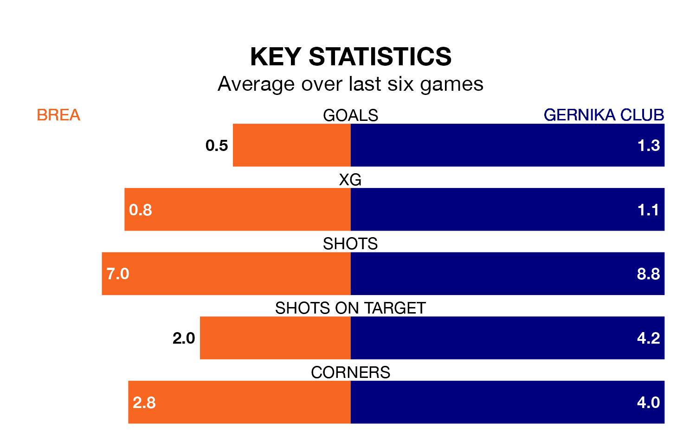

Brea are on a poor run ahead of hosting Gernika Club at Estadio Municipal de Piedrabuena on Sunday, with just three points collected from their last six games.
Brea have picked up just one win in their last six Segunda División RFEF Group 2 games, and face a Gernika Club side whose last six games have brought three wins and three losses.
Brea are bottom of the table after 30 games, of which they have won five and drawn six, earning 21 points.
Gernika Club are nine places ahead of the home team in ninth, with 10 wins and 10 draws putting them on 40 points.
With 14 goals in 30 games so far this season, Brea are the league's lowest scorers with 0.5 goals per game. And they are conceding more than average, letting in 43 goals at a rate of 1.4 per game.
The visitors, meanwhile, are average scorers, with 1.1 goals per game. They have conceded 1.4 goals per game.
In the last three years, Brea and Gernika Club have played each other on three occasions. They won one each, and they drew once.
Their last meeting was on December 3, when Gernika Club won 1-0 at home.
Brea's last match was on April 6, a 3-2 loss against Real Sociedad III, with Álvaro Martín Espiau and Éder Díez Sánchez getting the goals for Brea.
Gernika Club beat Utebo 2-0 last time out, also on April 6, with Asier Parra Cuezva on the scoresheet.
Updated: 14:47 (UTC), 09/04/24